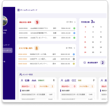
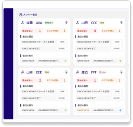

案件・メンバータスク管理ダッシュボード
ー 重要な案件とメンバー状況を直感的に見える化し、チームの案件管理をスムーズに ー
画面デザイン 2026.2
複数案件を同時に進めるチーム業務では、「締め切りが近い案件」や「負荷が高い案件」が埋もれやすく、優先順位が曖昧になりがち。
そこで、案件の重要度とメンバーの状況をひと目で把握できるように、
個人ダッシュボード / チームダッシュボード / 案件一覧 / 案件詳細を中心に、案件管理ツールのUIを設計した。
●制作範囲
提案 / 画面デザイン 1週間
●制作ツール
Figma

重要案件が自然に目に入る構成
締め切りが近い案件や負荷が高い案件を上部に集約し、優先順位を迷わない設計にした。
ステータス更新を“軽く”する
案件編集とは別に、ステータスだけを素早く変更できるUIにして更新の手間を減らした。

チーム状況を見える化
メンバーの負荷と手持ち案件の重要度を並べて表示し、偏りや詰まりを把握しやすくした。
登録を面倒にしない
個人ダッシュボード内に簡易登録フォームを置き、ページ遷移なしで案件を追加できるようにした。

| 目的 |
|
| ターゲット |
|
| 課題 |
|
| デザイン・情報設計 |
|


一覧を見る